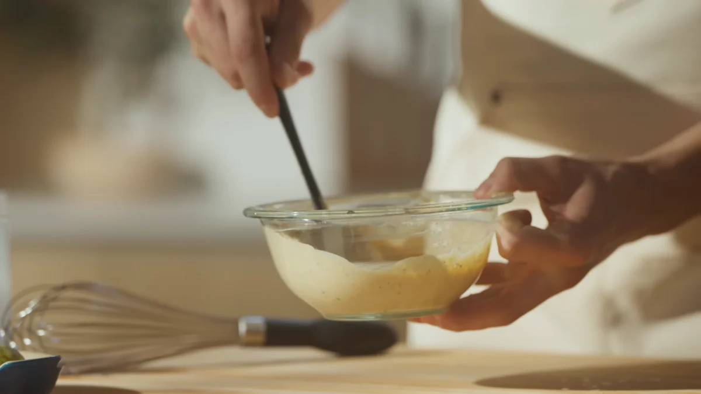
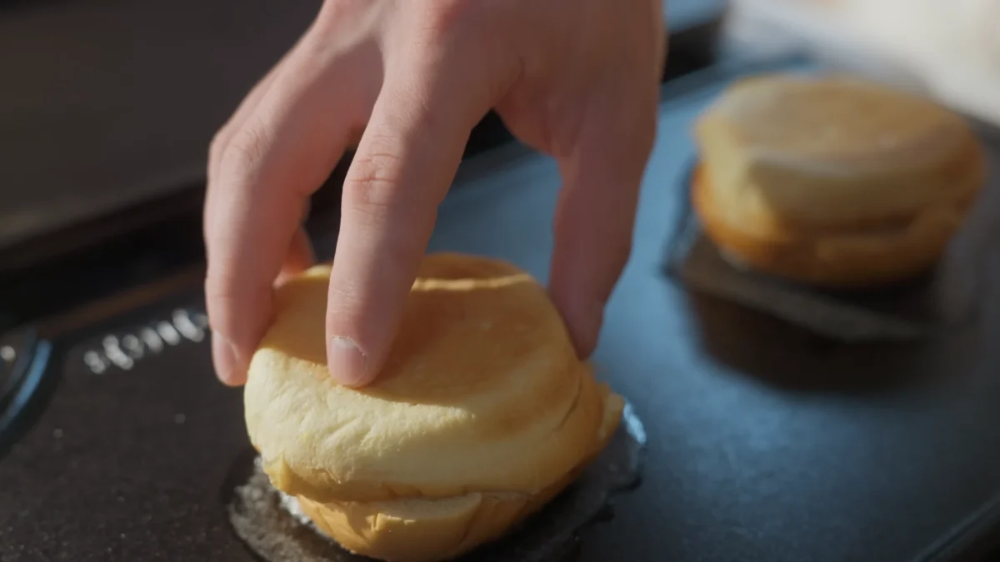
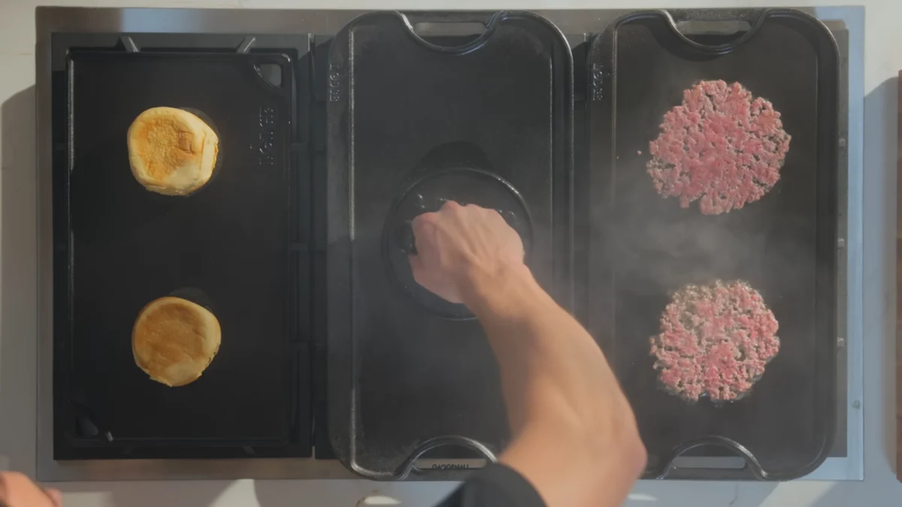
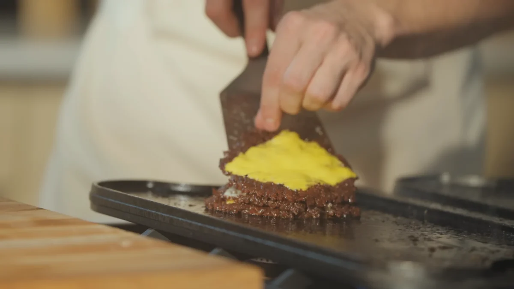
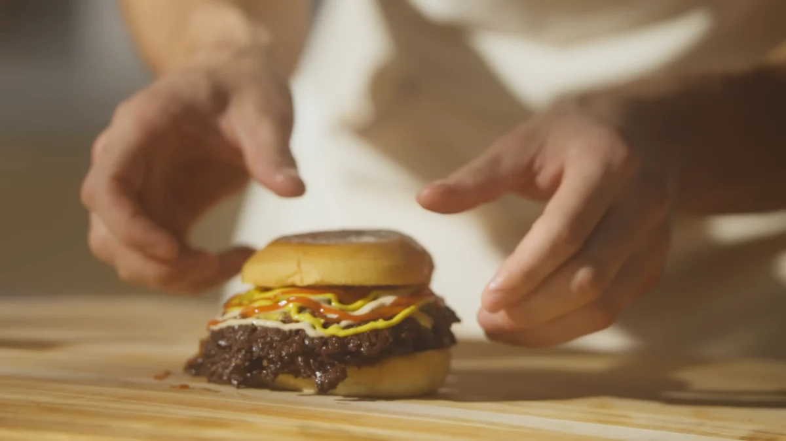

Back
Nik's Crispy Smashburger

Description
A smashburger is a fast, juicy, and ultra-crispy burger made by pressing ground beef directly onto a hot griddle so it sears instantly. This technique creates thin patties with deeply caramelized, crispy edges while keeping the inside tender and flavorful.
The key to a great smashburger is simplicity and heat. High-fat ground beef is shaped into loose balls and smashed thin on a hot cast iron surface. This maximizes contact with the pan, creating the signature browned crust known as the Maillard reaction, which gives the burger its rich, savory flavor.
While the patties cook quickly, a special sauce is prepared by mixing mayonnaise, ketchup, mustard, pickles, and spices. This sauce adds a creamy, tangy, and slightly sweet contrast to the salty beef and toasted buns.
The buns are lightly toasted on the griddle to add texture and prevent sogginess. Cheese is added directly to the hot patties so it melts perfectly, creating a rich, gooey layer that holds the stacked burgers together.
Once assembled, the smashburger is layered with multiple crispy patties, melted cheese, pickles, and sauce, all inside a soft toasted bun. The result is a perfectly balanced burger that is crispy, juicy, cheesy, and deeply satisfying.
Ingredients
- 2 lbs (900g) 80/20 or 85/15 ground beef
- Kosher salt, to taste
- 2 tsp neutral oil
- 2 medium yellow onions, thinly sliced (optional)
- ½ cup mayonnaise
- 2 tbsp ketchup
- 1 tbsp Dijon mustard
- 2 tbsp chopped pickles
- 1 tsp honey
- 1 tsp pickle juice or vinegar
- ½ tsp garlic powder
- ½ tsp onion powder
- ½ tsp smoked paprika
- ¼ tsp sugar
- 1 tbsp neutral oil (for cooking)
- 2 potato buns
- 6 slices American cheese
- 6 slices sharp cheddar cheese
- pickle chips
- ketchup and mustard, to taste
Steps
-
Prepare the beef:
Divide the ground beef into six equal portions and gently roll them into loose balls. Chill them in the refrigerator so the fat stays firm and the patties hold their shape when smashed.


-
Make the sauce:
In a small bowl, whisk together mayonnaise, ketchup, mustard, pickles, honey, pickle juice, garlic powder, onion powder, smoked paprika, sugar, salt, and pepper. Set aside in the fridge.

-
Toast the buns:
Heat a cast iron skillet or griddle over medium-high heat. Add a little oil and toast the buns cut-side down until golden brown. Remove and set aside.

-
Smash and cook the patties:
Place beef balls onto the hot griddle, season with salt, and smash them flat using a heavy spatula or burger press. Cook until the edges are crispy and browned, then flip and cook briefly on the other side.

-
Add cheese and stack:
Place cheese slices on the hot patties and let them melt. Stack the patties on top of each other to build height and flavor.

-
Assemble and serve:
Spread special sauce on the toasted buns, add stacked patties, pickles, ketchup, and mustard. Close the bun and serve immediately while hot and juicy.
